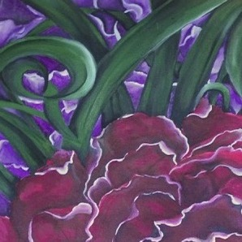

Potere ai Fiori
di ROLANDO SCACCABAROZZI


Potere ai Fiori
di ROLANDO SCACCABAROZZI
Decorazioni su Ombrelli

La decorazione degli ombrelli nasce come gioco, per l'allestimento di una vetrina di un negozio di abbigliamento e accessori. L'interesse e l'apprezzamento dell'idea portano Rolando a dipingere numerosissimi ombrelli, in cotone o in raso di seta, impreziosendo momenti importanti per amici, conoscenti e non.


Una serie di ombrelli decorati con temi di caccia vengono commissionati per conto della rivista Esquire - Edizione italiana, che li utilizza per un servizio fotografico a corredo di un proprio articolo di stile e moda.
Tecnica e stile
Esattamente come per i tessuti, anche per gli ombrelli le tecniche impiegate da Rolando sono tre: dipinto, a getto e silhouette. Il materiale di supporto è sempre cotone oppure raso in seta.